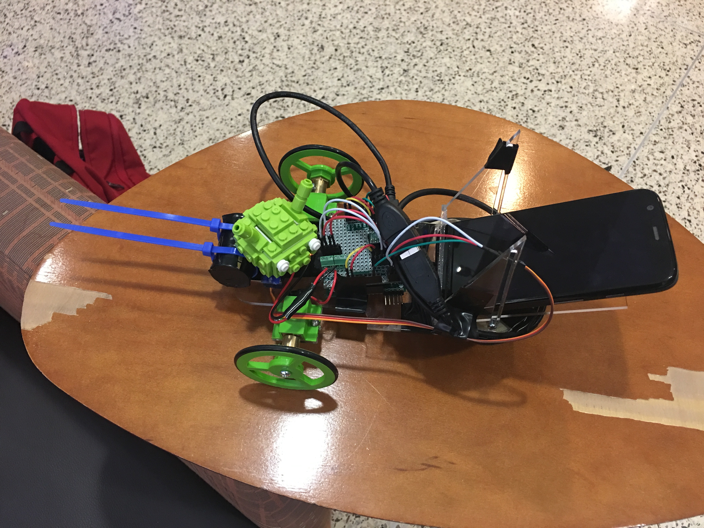

Mechatronics
Overview
Over the course of my graduate career at Northwestern I have taken and participated in several mechatronics related classes and projects. As such here are a few examples of work and projects that I've done.
- Overall understanding of microcontronllers and processors
- Communication methods such as SPI, I2C, USB, UART, CAN
- ICs such as IMU, ADC, DAC, GPIO, LCD, H Bridge
- Motor position and current control
- Small electric self driving vehicle
IMU Mouse Control
 |
The short video displayed shows the effects of my computer mouse being controlled by an IMU. The IMU is initialized and sends accelerometer data to the PIC32 microcontroller using I2C. The PIC then transfers that data over USB to the mouse. Specifically the data being listened to is the change in g's to the IMU in both the horizontal axes. As the magnitude of either increases, a proportional value is transmitted over USB and read by the computer as if it were coming from a mouse. The complete code used in this assignment can be seen here . A closer look at the code shows that a small LCD screen is also being used. Although not easy to see in the video, the LCD screen also receives data from the IMU using SPI communication. With this data it is able to draw 2 bars that represent axes. Each of these bars also change in size proportional to the acceleration measurement readings from the accelerometer.
The Tech Cup

As part of a final project in my advanced mechatronics class, students were made to compete in a race. The project setup was as follows, each student has to design and build a car which follows a gray road (as shown in the video), with the only restrictions being size constraints to each vehicle. The cars were almost entirely made from scratch. The wheels were 3D printed, the body laser cut from acrylic, the PCBs individually designed in Eagle, and more.
The bulk of the processing for the car is done in an Android phone. The camera on the phone is used in tracking the road. A simple image processing algorithm scans the image for the color gray (with sliders available to adust thresholds). The center of mass of the gray pixels is obtained, and the difference between it and the center of the screen is taken. This value represents how far away you are from being aligned with the road and is sent over USB to the PIC32 which implements a proportional controller in order to decide what PWM signal to send the motors.
Overall the project was a success. The video shows a working prototype a few days before the competition. The final design can be seen on the image. An Android Lego head was added as an ornament. It sits on top of a servo motor and turns to look at the road as the vehicle traverses the course. For a more in depth look at the code please visit my github page here
.|  |